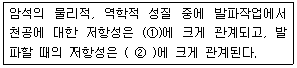
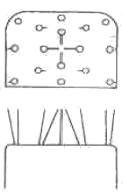
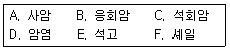
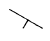

화약취급기능사 (2006-10-01 기출문제)
1과목: 화약 및 발파
1. 화약류의 안정도 시험방법에 속하는 것은?
- 마찰시험
- 순폭시험
- 가열시험
- 낙추시험
(정답률: 알수없음)

2. 다음 중 번커트 발파에 대한 설명으로 틀린 것은? (단, 쐐기 심빼기와 비교)
- 1 발파당 굴진량이 많다.
- 자유면에 대하여 경사 천공을 한다.
- 주변 발파시 저항선 측정이 용이하다.
- 천공위치 선정에 많은 시간이 절약된다.
(정답률: 알수없음)
3. 풀민산수은(Ⅱ)이 폭발하면 일산화탄소가 생성되는데 일산화탄소의 생성을 막기 위해 배합해 주는 것은?
- 염소산칼륨(KClO3)
- 질산칼륨(KNO3)
- 질산바륨(Ba(NO3)2)
- 수산화암모늄(NH4OH)
(정답률: 알수없음)
4. 카알릿(Carlit) 폭약에 폭발시 발생하는 염화수소 가스를 제거하기 위하여 배합해 주는 것은?
- 질산암모늄
- 질산에스테르
- 알루미늄
- 질산바륨
(정답률: 알수없음)
5. 누두공 시험에서 누두공의 모양과 크기에 영향을 미치는 요소로 틀린 것은?
- 뇌관의 종류
- 암반의 종류
- 폭약의 폭력 및 메지의 정도
- 약실의 위치와 자유면의 거리
(정답률: 알수없음)
6. 다음 ( )안에 들어갈 말로 옳은 것은?

- ① 인성, ② 경도
- ① 경도, ② 인성
- ① 인성, ② 전성
- ① 전성, ② 인성
(정답률: 알수없음)
7. 어떤 암체에 천공 발파결과 100g의 장약량으로 1.5m3의 채석량을 얻었다면 300g의 장약량으로는 몇m3의 채석이 가능한가?
- 3.4m3
- 3.8m3
- 4.0m3
- 4.5m3
(정답률: 알수없음)
8. 토립자의 비중이 2.55이고 간극비가 1.3인 흙의 포화도는? (단, 이 흙의 함수비는 18%이다.)
- 25.3%
- 35.3%
- 45.3%
- 55.3%
(정답률: 알수없음)
9. 다음 중 사용상 안전성이 있는 반면에 흡습성이 심하여 수질공(水質孔)에서는 사용하기 어려운 폭약은?
- 슬러리(Slurry) 폭약
- ANFO 폭약
- 교질다이너마이트
- 에멀젼(Emulsion) 폭약
(정답률: 알수없음)
10. 아래 그림과 같은 심빼기 방법은?

- V형 심빼기(V cut)
- 피라미드 심빼기(Pyramid cut)
- 삼각 심빼기(Triangle cut)
- 노르웨이 심빼기(Norway cut)
(정답률: 알수없음)
11. 발파계원은 발파 위험구역안의 통행을 막기 위해서 경계원을 배치하고 경계원에게 확인시켜야 할 사항이 있다. 적당하지 않은 것은?
- 발파방법
- 경계하는 위치
- 경계하는 구역
- 발파완료 후의 연락방법
(정답률: 알수없음)
12. 전기뇌관의 백금선 전교길이가 3mm일 때 뇌관 1개의 전기 저항은? (단, 각선 1개의 길이: 1.5m, 각선 전기저항: 0.084Ω/m, 전교선 저항: 340Ω/m)
- 0.252Ω
- 2.52Ω
- 0.127Ω
- 1.27Ω
(정답률: 알수없음)
13. 1차 발파에 의하여 파괴된 암괴가 필요 이상의 크기일 때 그 암괴를 다시 파괴하는 것을 소할발파라 한다. 다음 중 소할발파법에 속하지 않는 것은?
- W.S.B 공법
- 복토법
- 사혈법
- 천공법
(정답률: 알수없음)
14. 공의 지름이 45mm가 되도록 천공을 하고 약경 17mm의 정밀 폭약 1호를 사용하여 발파작업을 하려 한다. 디커플링지수 (Decoupling index)는 얼마인가?
- 2.65
- 2.⑤
- 1.88
- 1.33
(정답률: 알수없음)
15. 다음 중 질산에스테르류에 속하는 화약류는 어느 것인가?
- 흑색 화약
- ANFO 폭약
- 니트로셀룰로오스
- 피크린산
(정답률: 알수없음)
16. 질산암모늄에 대한 설명 중 가장 옳은 것은?
- 흰색 결정으로 화학식은 NaNO3로 표기한다.
- 물에 잘 녹고 흡습성이 크다.
- 녹는점은 569℃이다.
- 흑색화약의 산소 공급제이다.
(정답률: 알수없음)
17. 발파 공경을 32mm로 하여 암석계수(Ca)가 0.015인 암반에 천공하고 장약장(m)을 공경의 12배로 폭발시켰을 때의 최소저항선은 얼마인가?
- 83.1cm
- 88.1cm
- 93.1cm
- 98.1cm
(정답률: 알수없음)
18. 배면(背面)만이 모암(母岩)과 접속한 자유면은 몇 자유면인가?
- 2 자유면
- 3 자유면
- 4 자유면
- 5 자유면
(정답률: 알수없음)
19. 전색물(메지)의 조건으로 적당하지 않는 것은?
- 연소되지 않는 것
- 단단하게 다져질 수 있는 것
- 불발이나 잔류폭약을 회수하기에 안전한 것
- 발파공벽과 마찰이 적은 것
(정답률: 알수없음)
20. 전기발파 결선법 중 병렬식 결선법의 장점이 아닌 것은?
- 대형발파에 이용된다.
- 전기뇌관의 저항이 조금씩 달라도 큰 문제가 없다.
- 전원에 동력선, 전등선을 이용할 수 있다.
- 결선이 틀리지 않고 불발시 조사하기 쉽다.
(정답률: 알수없음)
2과목: 화약류 안전관리 관계 법규
21. 다음 중 내열 시험에서 중탕 남비의 가열 온도로 맞는 것은?
- 45℃
- 55℃
- 65℃
- 75℃
(정답률: 알수없음)
22. 파단 예정면에 다수의 근접한 무장약공을 천공하여 인위적인 파단면을 형성한 뒤에 발파하는 조절 발파 방법은?
- 스므드 발파법(smooth blasting)
- 프리스플리팅법(presplitting)
- 완충발파법(cushion blasting)
- 줄천공법(line drilling)
(정답률: 알수없음)
23. 가연성 가스나 석탄 가루에 의한 폭발반응을 막기 위하여 폭약에 배합하여 주는 감열소염제는?
- 알루미늄
- 염소산염
- 염화나트륨
- 과염소산염
(정답률: 알수없음)
24. 다음은 겉보기 비중과 강도에 대한 설명이다. 틀린 것은?
- 폭약은 비중이 클수록 기폭하기 쉽다.
- 비중이 작으면 폭발속도나 맹도가 낮다.
- 화약의 비중은 겉보기 비중으로 나타낸다.
- 비중이 작은 폭약을 저비중 폭약이라 하며, 장공 발파 등에 사용된다.
(정답률: 알수없음)
25. 최소저항선과 누두공 반지름이 같으면 누두지수 함수f(n)은 얼마인가?
- 0.5
- 1
- 1.5
- 2
(정답률: 알수없음)
26. 안정도시험의 결과보고에 포함시키지 않아도 되는 사항은?
- 시험실시 연월일
- 시험을 실시한 장소
- 시험을 실시한 화약류의 종류ㆍ수량 및 제조일
- 시험방법 및 시험성적
(정답률: 알수없음)
27. 피뢰침 및 가공지선을 피보호건물로부터 독립하여 설치하는 경우 피뢰침 및 가공지선의 각 부분은 피보호건물로부터 몇 m 이상의 거리를 두어야 하는가? (단, 법령상의 최소기준임)
- 1.5m 이상
- 2.0m 이상
- 2.5m 이상
- 3.0m 이상
(정답률: 알수없음)
28. 화약류의 사용지를 관할하는 경찰서장의 사용허가를 받지 아니하고 화약류를 발파 또는 연소시킬 경우의 처벌내용은? (단, 광업법에 의하여 광물의 채굴을 하는 사람과 대통령령으로 정하는 사람은 제외)
- 5년이하의 징역 또는 1천만원이하의 벌금형
- 3년이하의 징역 또는 700만원이하의 벌금형
- 2년이하의 징역 또는 500만원이하의 벌금형
- 1년이하의 징역 또는 300만원이하의 벌금형
(정답률: 알수없음)
29. 화약류를 운반하는 사람이 화약류 운반 신고필증을 지니지 아니하였을 경우 처벌내용으로 맞는 것은?
- 2년이하의 징역 또는 200만원이하의 벌금
- 3년이하의 징역 또는 300만원이하의 벌금
- 5년이하의 징역 또는 500만원이하의 벌금
- 300만원이하의 과태료
(정답률: 알수없음)
30. 지상 1급 저장소의 마루는 기초에서부터 얼마 이상의 높이로 설치하는가? (단, 법령상의 최소 기준임)
- 40cm 이상
- 30cm 이상
- 20cm 이상
- 10cm 이상
(정답률: 알수없음)
31. 다음 중 수분 또는 알코올분을 20% 정도 머금은 상태로 운반해야 하는 것은?
- 테트라센
- 펜타에리스릿트
- 뇌홍
- 니트로셀룰로오스
(정답률: 알수없음)
32. 화약류 발파의 기술상의 기준에 대한 설명으로 틀린 것은? (단, 초유폭약은 제외)
- 발파는 현장소장의 책임하에 해야 한다.
- 화약 또는 폭약을 장전하는 때에는 그 부근에서 담배를 피우거나 화기를 사용해서는 안된다.
- 한번 발파한 천공된 구멍에 다시 장전하지 않는다.
- 발파하고자 하는 장소에 누전이 되어 있는 때에는 전기발파를 하지 않는다.
(정답률: 알수없음)
33. 다음 중 꽃불류 사용에 관한 기술상의 기준으로 틀린 것은?
- 바람이 강하게 불 때에는 사용을 중지 할 것
- 꽃불류는 용기에 넣어 뚜껑을 덮고 그 용기에는 불기를 접근시키지 아니할 것
- 쏘아 올리는 꽃불류는 20m 이상의 높이에서 퍼지도록 할 것
- 발사통을 2개이상 사용하는 때에는 발사통을 근접하여 나란히 둘 것
(정답률: 알수없음)
34. 화약류 저장소에 따른 저장량으로 맞는 것은? (단, 화약류의 종류는 화약이다.)
- 1급 저장소: 100톤
- 2급 저장소: 50톤
- 3급 저장소: 25톤
- 수중저장소: 400톤
(정답률: 알수없음)
35. 선박의 항로 또는 계류소는 몇 종 보안물건에 해당하는가?
- 제1종 보안물건
- 제2종 보안물건
- 제3종 보안물건
- 제4종 보안물건
(정답률: 알수없음)
36. 화성암의 육안감정시 가장 밝은 색을 나타내는 것은 다음 중 어느 것인가?
- 염기성암
- 초염기성암
- 중성암
- 산성암
(정답률: 알수없음)
37. 다음 중 접촉변성작용을 받아 만들어진 암석은?
- 혼펠스
- 천매암
- 편마암
- 편암
(정답률: 알수없음)
38. 마그마가 다른 암석을 절단하는 틈을 따라 관입하여 굳어져서 만들어진 판 모양의 화성암체를 무엇이라 하는가?
- 용암
- 병반
- 암맥
- 포획
(정답률: 알수없음)
39. ‘흐른 무늬가 있는 암석’이라는 뜻으로, 화산에서 분출된 마그마가 흘러내리면서 굳어져서 평행구조를 가진 화산암은?
- 현무암
- 화강암
- 유문암
- 편마암
(정답률: 알수없음)
40. 단층면의 주향이 지흥의 주향과 평행 또는 직교하지 않고 30°~60° 정도로 교차하는 단층은?
- 주향단층
- 경사단층
- 사교단층
- 계단단층
(정답률: 알수없음)
3과목: 암석 및 지질
41. 접촉변성작용의 특징과 관계가 없는 것은?
- 열에 의한 작용이다.
- 원인은 주로 마그마의 관입으로 생긴다.
- 범위는 마그마가 관입한 부분으로 좁은 편이다.
- 변화는 엽리가 발달하고 밀도가 커진다.
(정답률: 알수없음)
42. 화산암에는 광물 알갱이들을 육안으로 구별할 수 없는 것이 많다. 이러한 특징을 갖는 조직을 무엇이라 하는가?
- 비현정질 조직
- 현정질 조직
- 입상 조직
- 등립질 조직
(정답률: 알수없음)
43. SiO2의 함유량이 45%이하인 화성암을 무엇이라 하는가?
- 산성암
- 중성암
- 염기성암
- 초염기성암
(정답률: 64%)
44. 현정질 및 비현정질 조직에 있어서 상대적으로 유난히 큰 광물알갱이들이 반점 모양으로 들어 있는 경우 이러한 조직은?
- 반상조직
- 구상조직
- 미정질조직
- 유리질조직
(정답률: 알수없음)
45. 쇄설성 퇴적암을 다음의 보기에서 골라 옳게 짝지은 것은?

- B 와 E
- C 와 D
- B 와 C
- A 와 F
(정답률: 알수없음)
46. 습곡의 축면이 거의 수평으로 기울어져 있는 습곡은?
- 배심습곡
- 횡와습곡
- 향심습곡
- 동형습곡
(정답률: 90%)
47. 변성암에 바늘 모양의 광물이나 주상의 광물이 한 방향으로 평행하게 배열되는 특징을 무엇이라 하는가?
- 절리
- 선구조
- 물결자국
- 편마구조
(정답률: 알수없음)
48. 다음은 화성암의 주 구성 광물이다. 경도(굳기)가 가장 큰 것은?
- 석영
- 백운모
- 휘석
- 각섬석
(정답률: 알수없음)
49. 화학적 퇴적암인 쳐어트(chert)에 대한 설명으로 틀린 것은?
- 규질의 화학적 침전물로서 치밀하고 굳은 암석이다.
- SiO2함량은 15% 정도이다.
- 쳐어트 중에서 지층을 이룬 것을 층상쳐어트라고 한다.
- 쳐어트는 수석 또는 각암이라고 불린다.
(정답률: 알수없음)
50. 현무암과 같은 화산암에 있는 기공이 다른 광물로 채워졌을 때 이 구조를 무엇이라 하는가?
- 구상 구조
- 유상 구조
- 구과상 구조
- 행인상 구조
(정답률: 알수없음)
51. 지질도상에 주향과 경사가 수평인 지층의 경우에 표시하는 기호는?




(정답률: 알수없음)
52. 쥐라기 말기에 한반도에서는 지질시대 중 가장 강력한 조산운동과 큰 규모의 화성활동이 있었다. 이를 무엇이라 하는가?
- 송림운동
- 연일운동
- 불국사운동
- 대보조산운동
(정답률: 알수없음)
53. 지각은 화성암, 퇴적암, 변성암으로 구성되어 있는데, 변성암을 변성되기 전의 원암으로 계산할 때 지구표면 근처에는 표토를 제외하고 퇴적암과 화성암의 양적비율이 어떻게 되는가?
- 퇴적암 75% : 화성암 25%
- 화성암 75% : 퇴적암 25%
- 화성암 95% : 퇴적암 5%
- 퇴적암 95% : 화성암 5%
(정답률: 알수없음)
54. 다음 중 변성정도가 가장 낮은 암석은?
- 편마암
- 슬레이트
- 천매암
- 편암
(정답률: 알수없음)
55. 광역변성작용에 의하여 생성된 암석들의 특징은?
- 구성 광물들이 일정한 방향으로 배열된다.
- 구성 광물들이 방향성을 가지지 못한다.
- 구성 광물들이 불규칙하게 배열된다.
- 구성 광물들이 방향성을 잃어버린다.
(정답률: 알수없음)
56. 화성암에서 흔히 발견되는 광물이 아닌 것은?
- 장석
- 석영
- 점토
- 흑운모
(정답률: 알수없음)
57. 우리나라 지질의 특징을 설명한 것 중에서 틀린 것은?
- 선캄브리아대의 암석은 전 국토 면적의 약 50%를 차지하며, 주로 개마고원, 경기 등에 분포한다.
- 고생대 지층에서 조선누층군은 육성층이고 평안층군은 해성층이 우세하다.
- 중생대 지층은 트라이아스기 말기에서 쥐라기 중기에 형성된 대동층군과 백악기에 형성된 경상층군이 있다.
- 신생대층은 분포가 가장 협소하며 해성층과 육성층이 교대로 이루어져 있다.
(정답률: 알수없음)
58. 유색광물을 거의 포함하지 않은 화강암을 무엇이라 하는가?
- 구상 화강암
- 반상 화강암
- 세립질 화강암
- 우백질 화강암
(정답률: 알수없음)
59. 다음 중 화성암을 바르게 설명한 것은?
- 지표에 노출되어 있는 암석들이 풍화와 침식작용을 받아서 생긴 암석을 말한다.
- 지하의 마그마가 지표에 분출하거나 지각에 관입하여 굳어진 암석을 말한다.
- 일단 형성된 암석이 지각변동에 의하여 압력이나 열을 받아서 생긴 암석을 말한다.
- 재결정작용에 의하여 파쇄되었던 암석들이 다시 모여 접촉변성을 일으켜 생긴 암석을 말한다.
(정답률: 알수없음)
60. 퇴적암에서 특징적으로 나타나는 것들로만 나열되어 있는 것은?
- 편리, 엽리, 편마 구조
- 절리, 엽리, 사층리
- 화석, 연흔, 건열
- 유리질조직, 반상조직, 등립상조직
(정답률: 알수없음)